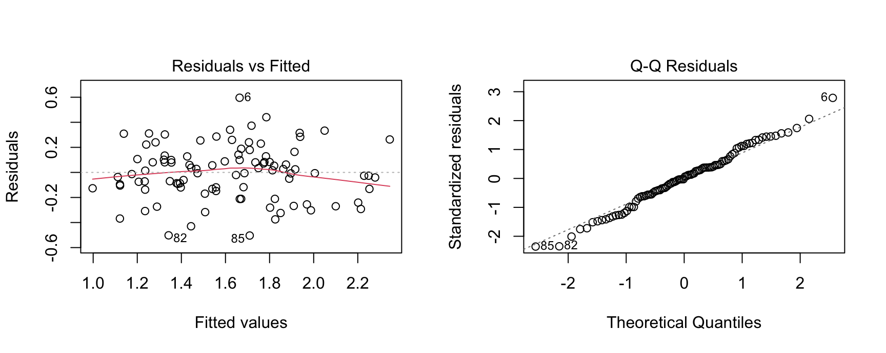

Day 2: ANOVA and Mean Comparison in Breeding Trials
Regional Training Course on Experimental Design and Data Analysis for the Advancement of Mutant Populations (RER5030)
Luis Fernando Delgado Muñoz
10 November 2026
Plan for the afternoon
13:30
ANOVA of an RCBD and its assumptions
Exercise 5
15:00
Comparing means: LSD, Tukey, Duncan, Dunnett
Exercise 6
16:15
Statistical vs practical significance and the decisiondiscussion
Goal: leave able to fit the ANOVA of your trial, check it, and answer the breeder’s question: which lines are better than the parent or the check, by how much, and which ones do we advance?
Our data: durum wheat in Algeria
24 genotypes, 22 environments (11 locations, 2 years); each environment is an RCBD with 4 blocks
Real data, used with permission (Biometris, Wageningen University and Research; CIP course 2021)
Today: one environment (loc10_year1), 96 plots
|> select (Environment, Block, Genotype, yield) |> head (6 )
# A tibble: 6 × 4
Environment Block Genotype yield
<chr> <fct> <fct> <dbl>
1 loc10_year1 Bl1 INRAT69 1.45
2 loc10_year1 Bl1 ARDENTE 1.56
3 loc10_year1 Bl1 POLON/ZB 1.78
4 loc10_year1 Bl1 SAHEL77 1.83
5 loc10_year1 Bl1 OFANTO 1.45
6 loc10_year1 Bl1 HEBDA03 2.26
Model of the RCBD (chapter 5 of the manual):
yield = overall mean + block effect + genotype effect + error
Fit the model
<- lm (yield ~ Block + Genotype, data = e10)anova (fit)
Analysis of Variance Table
Response: yield
Df Sum Sq Mean Sq F value Pr(>F)
Block 3 3.9362 1.31206 20.6185 1.205e-09 ***
Genotype 23 5.4481 0.23687 3.7223 1.233e-05 ***
Residuals 69 4.3908 0.06364
---
Signif. codes: 0 '***' 0.001 '**' 0.01 '*' 0.05 '.' 0.1 ' ' 1
Block : variation among the 4 blocks (field effect)Genotype : variation among the 24 genotype meansResiduals : plot to plot differences within the same genotype and block; its mean square is the error variance
F genotype = ratio of the variance among genotype means to the error variance. If all genotypes were equal, F would be near 1.
A significant F says at least one genotype is different . It does not say which.
For that we need the comparisons of means (Block 3).
What we assume
The errors are independent , have equal variance for all genotypes, and are approximately normal .
Check the residuals , not the raw data (the raw data contain genotype and block effects).
par (mfrow = c (1 , 2 ))plot (fit, which = 1 : 2 )

How to read the plots
Residuals vs fitted: a random cloud is good. A funnel means variance depends on the mean. A curve means a missing term.QQ plot: points on the line. Small departures in the tails matter little.Tests (support only, few plots per genotype):
shapiro.test (resid (fit))$ p.value<- function (y, group) anova (lm (abs (y - ave (y, group, FUN = median)) ~ group))levene (e10$ yield, e10$ Genotype)$ ` Pr(>F) ` [1 ]
Outliers: a residual above about 3 residual SD: check the field book, correct or remove with a note , never silently.
When variance grows with the mean
Real counts of webworms in a beet field: 13 blocks, 4 insecticide treatments (Beall, 1940). One value per plot = sum of the 25 unit areas.
<- beall.webworms |> group_by (block, trt) |> summarise (count = sum (y), .groups = "drop" )|> group_by (trt) |> summarise (mean = mean (count), variance = var (count))
# A tibble: 4 × 3
trt mean variance
<fct> <dbl> <dbl>
1 T1 35 216.
2 T2 12.6 17.4
3 T3 21.3 107.
4 T4 10.3 29.4
The treatment with the highest mean has also the highest variance.
A rice trial with a control
11 genotypes: lines G1 to G9, the variety centinela (parent, 2 plots per block) and a check
Irrigated, RCBD with 3 blocks
Analysis of Variance Table
Response: REND
Df Sum Sq Mean Sq F value Pr(>F)
Bloq 2 1.594 0.7969 0.9977 0.3841461
GEN 10 42.052 4.2052 5.2643 0.0004845 ***
Residuals 23 18.373 0.7988
---
Signif. codes: 0 '***' 0.001 '**' 0.01 '*' 0.05 '.' 0.1 ' ' 1
c (CV = 100 * sigma (fit_irr) / mean (irr$ REND), df = df.residual (fit_irr))
The multiple comparison problem
11 genotypes = 55 pairs . With no real differences, at 5% each, we expect about 3 false positives .
LSD nothing (5% each)
After a significant F; screening
Tukey HSD the error of all pairs together
All against all; conservative
Dunnett the error of the comparisons with one control
New lines vs parent or check
Duncan: common, but weakly protected
duncan.test (fit_irr, "GEN" , console = FALSE )$ groups
REND groups
G4 9.666667 a
G9 9.433333 ab
G6 9.200000 ab
G1 8.700000 abc
G3 8.166667 abcd
centinela 7.933333 bcd
G8 7.866667 bcd
G2 7.300000 cde
G5 7.133333 cde
G7 6.600000 de
check 6.000000 e
Groups between LSD and Tukey, but no control of the error of all comparisons . If a paper reports Duncan letters, read them as screening. For decisions use Tukey (all pairs) or Dunnett (against a control).
Letters hide the size of the differences and the uncertainty. Report differences with confidence intervals.
Dunnett: lines against the control
The breeder’s question: is any line better than the parent? 10 comparisons, not 55.
<- summary (contrast (em, method = "trt.vs.ctrl" , ref = 1 ), infer = TRUE )|> select (contrast, estimate, SE, lower.CL, upper.CL, p.value) |> mutate (across (where (is.numeric), \(x) round (x, 3 )))
contrast estimate SE lower.CL upper.CL p.value
1 check - centinela -1.933 0.632 -3.812 -0.054 0.041
2 G1 - centinela 0.767 0.632 -1.112 2.646 0.763
3 G2 - centinela -0.633 0.632 -2.512 1.246 0.865
4 G3 - centinela 0.233 0.632 -1.646 2.112 0.996
5 G4 - centinela 1.733 0.632 -0.146 3.612 0.081
6 G5 - centinela -0.800 0.632 -2.679 1.079 0.734
7 G6 - centinela 1.267 0.632 -0.612 3.146 0.310
8 G7 - centinela -1.333 0.632 -3.212 0.546 0.262
9 G8 - centinela -0.067 0.632 -1.946 1.812 1.000
10 G9 - centinela 1.500 0.632 -0.379 3.379 0.166
Protected or not?
<- summary (contrast (em, "trt.vs.ctrl" , ref = 1 ), adjust = "none" )c (unadjusted = sum (unadj$ p.value < 0.05 ), dunnett = sum (dun_tab$ p.value < 0.05 ))
Without protection, 4 of 10 lines look different from the control. Dunnett confirms one (the check, lower than the parent).
Three numbers, read together
The size of the difference (t/ha and % of the control)
The confidence interval
The smallest difference that matters , decided before the trial (e.g. 10% of the parent)
<- summary (em) |> filter (GEN == "centinela" ) |> pull (emmean)|> mutate (gain_percent = 100 * estimate / ctrl_mean) |> select (contrast, estimate, lower.CL, upper.CL, gain_percent, p.value) |> arrange (desc (estimate)) |> head (3 ) |> mutate (across (where (is.numeric), \(x) round (x, 2 )))
contrast estimate lower.CL upper.CL gain_percent p.value
1 G4 - centinela 1.73 -0.15 3.61 21.85 0.08
2 G9 - centinela 1.50 -0.38 3.38 18.91 0.17
3 G6 - centinela 1.27 -0.61 3.15 15.97 0.31
What can we say about G4?
G4: +1.7 t/ha (+22%) , Dunnett p = 0.08, interval from -0.1 to +3.6 t/ha.
“There is no difference”: wrong . The trial failed to detect it.
“G4 is 22% better”: too strong . Compatible with almost no gain, and with more than 3 t/ha.
A promising line that needs more replication or more environments .
<- qt (0.975 , df.residual (fit_irr)) * sqrt (2 * sigma (fit_irr)^ 2 / 3 )c (LSD_t_ha = lsd_value, percent_of_mean = 100 * lsd_value / mean (irr$ REND))
LSD_t_ha percent_of_mean
1.509616 18.883313
With 3 replicates and CV 11%, differences below about 1.5 t/ha (19%) cannot be confirmed.
Common interpretation pitfalls (1)
Letters read as a ranking of true values
Report differences with intervals
“Not significant” means “equal” (G4: +22%, p = 0.08)
Look at the interval and the minimum detectable difference
Many unadjusted tests (55 pairs, about 3 false positives)
Tukey for all pairs, Dunnett against a control
Wrong or undefined reference
Decide it before the trial
One environment only
Several environments or seasons; check consistency
Selection bias
Select more lines than needed; confirm
Key takeaways
The ANOVA partitions variation into blocks, genotypes and error. Report the MSE, CV and residual df
A significant F says there are differences, not where. Dunnett for lines against a control; Tukey for all pairs; LSD for screening
Check the residuals ; a funnel calls for a transformation
Statistical significance is not practical value: size, confidence interval and the smallest difference that mattersAugmented designs: error from the checks only; adjust the new lines for blocks
Several environments: test genotypes against G x E ; compare the variance components
Superior genotypes: decide the reference and the smallest gain first; classify with Dunnett intervals; trust agreement across environmentsThe advantage of selected lines shrinks in the next stage: select more than you need
Resources
Course manual , chapter 6: theory, code and the solved exerciseDunnett, C. W. (1955). A multiple comparison procedure for comparing several treatments with a control. JASA , 50(272), 1096-1121.
Beall, G. (1940). The fit and significance of contagious distributions when applied to observations on larval insects. Ecology , 21(4), 460-474.
de Mendiburu, F. agricolae; Lenth, R. V. emmeans; Wright, K. agridat
Durum wheat data: Bustos-Korts, D., Adams, J. & van Eeuwijk, F. (2021). Biometris, Wageningen University and Research. Used with permission.